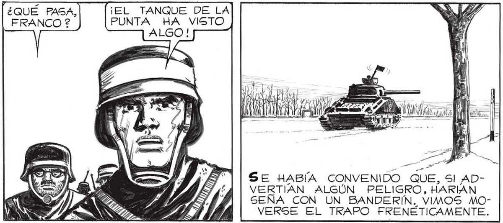
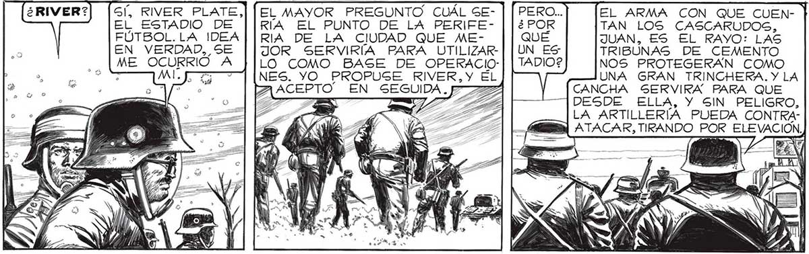
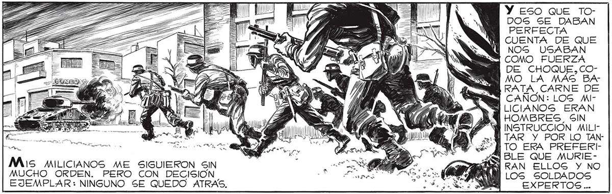

SÍ, RIVER PLATE, EL ESTADIO DE FÚTBOL.LA IDEA EN VERDAD, SE EL MAYOR PREGUNTO CUÁL SGERÍA EL PUNTO DE LA PERIFERIA DE LA CIUDAD QUE MEJOR SERVIRÍA PARA UTILIZAREL ARMA CON QUE CUEN- ] TAN LOS CASCARUDOGS, LO COMO BASE DE OPERACIO: NOS PROTEGERAN COMO UNA GRAN TRINCHERA. Y LA CANCHA SERVIRA PARA QUE DESDE ELLA, Y SIN PELIGRO, LA ARTILLERÍA PUEDA CONTRAA] ATACAR, TIRANDO POR ELEVACIÓN, Ez 9 ICON ME OCURRIÓ A : MALE? > ad NES. YO PROPUSE RIVER,Y EL o ACEPTO” EN SEGUIDA. p >= ¡EL TANQUE DE LA PUNTA HA VISTO "¿QUÉ PAGA, | FRANCO ? ¡LISTOS LOS DEL LAN-. ZARRAYOS! ¡PREPARENGE PARA INTERVENIR! AAA _ SE HABÍA CONVENIDO QUE, SI ADVERTIAN ALGÚN PELIGRO, HARIAN SEÑA CON UN BANDERIN. VIMOS MOVERSE EL TRAPO FRENETICAMENTE. ¡ ATENCION, TENIENTE SALVO'¡ADELANTESE CON S5US HOMBRES EN APOYO DEL TANQUE! == O SS y, AE SN ' N : Y > 4 Mas / | CIR SÍ, y po, Me 1 a E ll IA de Sul l A a ; y ES a ÍA ..... í POLAZO. . AQUELLA ORDEN ERA PARA MÍ.. Mis MILICIANOS ME SIGUIERON SIN MUCHO ORDEN. PERO CON DECISION EJEMPLAR: NINGUNO SE QUEDO ATRAS, ADEMAS, EN EL ESTADIO TENDREMOS LUGAR DE SOBRA PARA LOS CAMIONES CON LOS VIVERES Y EL AGUA, Y PARA LOS FURGONES DONDE PODAMOS SACARNOS LOS TRAJES PARA COMER Y PARA... NS ECO, VIOLENTO, RESTALLO E DISPARO DE ALTA VELOCIDAD. : y SS ye. <a> A S Á y se Ss Y Eso QUE TODOS SE DABAN PEREECTA CUENTA DE QUE NOS USABAN COMO FUERZA DE CHOQUE,COMO LA MÁS BARATA CARNE DE i CAÑON: LOS MILICIANOS ERAN HOMBRES, SIN Y INSTRUCCIÓN MILIe Y TAR Y POR LO TANe“ TO ERA PREFERI¿QQ BLE QUE MURIESÍ RAN ELLOS Y NO LOS SOLDADOS j EXPERTOS... 101


